Mục đích
Expense Claim (Đề nghị thanh toán) dùng để gửi kế hoạch chi phí và chi phí thực tế trên một phiếu. Quản lý trực tiếp duyệt trước; Kế toán và Controller duyệt chi phí thực tế sau.
Mỗi lần phiếu chuyển bước, người cần xử lý nhận thông báo trên chuông ERP và email.
Chi phí đã trả cho nhà cung cấp (hóa đơn mua hàng, garage…) không khai trên Expense Claim. Dùng quy trình mua hàng.
Trước khi bắt đầu
- Đăng nhập bằng tài khoản gắn hồ sơ Employee
- Danh sách chỉ hiện đề nghị của chính bạn
- Chỉ tạo đề nghị cho chính mình. From Employee và Expense Approver lấy từ hồ sơ và không sửa trên form
- Hồ sơ nhân viên đã có hình thức nhận tiền nếu bạn chọn Bank transfer
- Giữ chứng từ gốc (hóa đơn, biên lai) để đính kèm khi nhập chi phí thực tế
Quy trình hai giai đoạn
| Giai đoạn | Bạn làm gì | Nút |
|---|---|---|
| Kế hoạch (Plan) | Nhập thời gian, nội dung, ngân sách. Lưu phiếu, rồi gửi kế hoạch | Save rồi Actions → Submit Plan |
| Thực hiện | Làm việc ngoài hệ thống. Trên thanh quy trình, bước Execute sáng | — |
| Thực tế (Actual expense) | Thêm dòng chi phí, đính kèm chứng từ, rồi gửi | Actions → Submit Actual |
Các bước thực hiện — nhân viên
Bước 1: Mở danh sách Expense Claim
Vào module HR → Expense Claim.
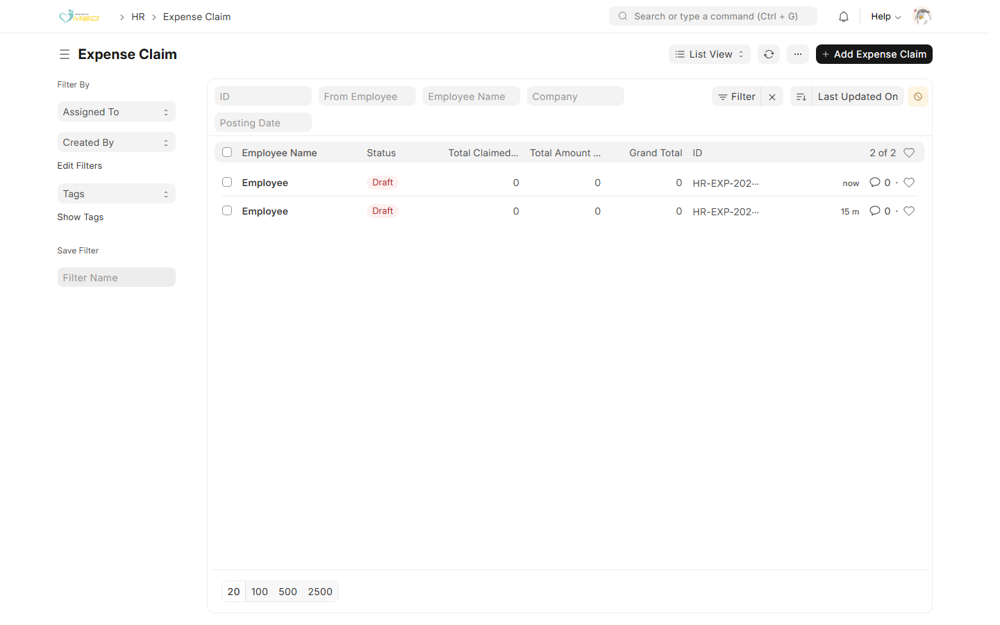
Bước 2: Tạo đề nghị mới
Nhấn Add Expense Claim.
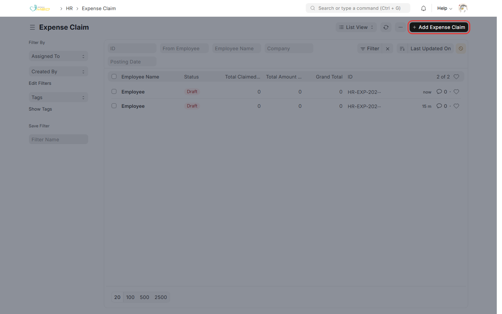
Bước 3: Lưu form mới
Form mới có nhãn Not Saved và nút Save. Menu Actions chưa hiện cho đến khi bạn lưu.
Nhấn Save khi chưa gửi được. Phiếu nằm trong danh sách của bạn. Mở lại sau để nhập tiếp. Quản lý không thấy phiếu lúc này.
Form có ba mục: General, Plan, Actual expense. Mục đang mở là General.
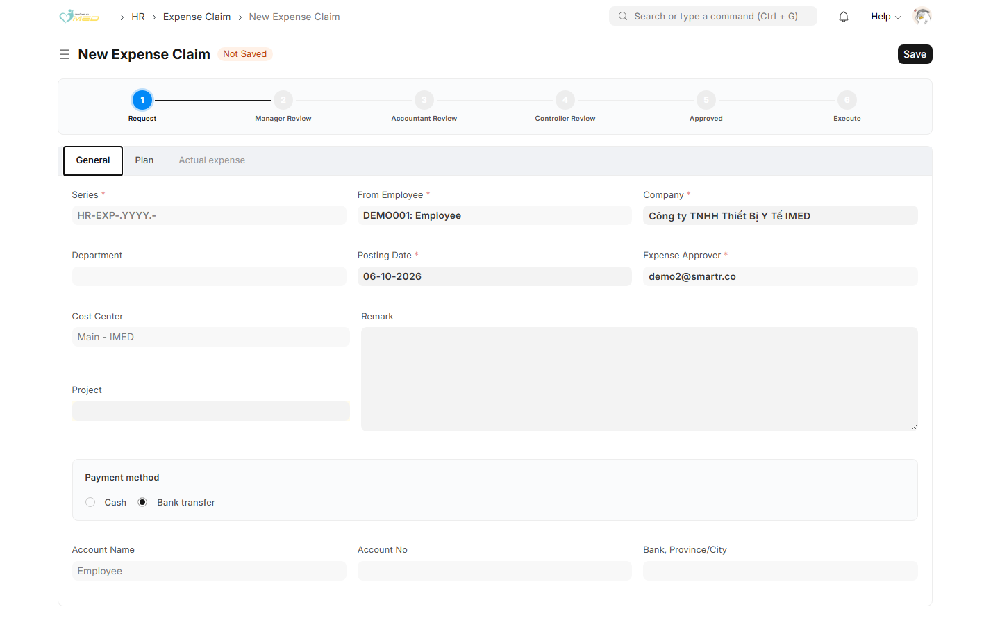
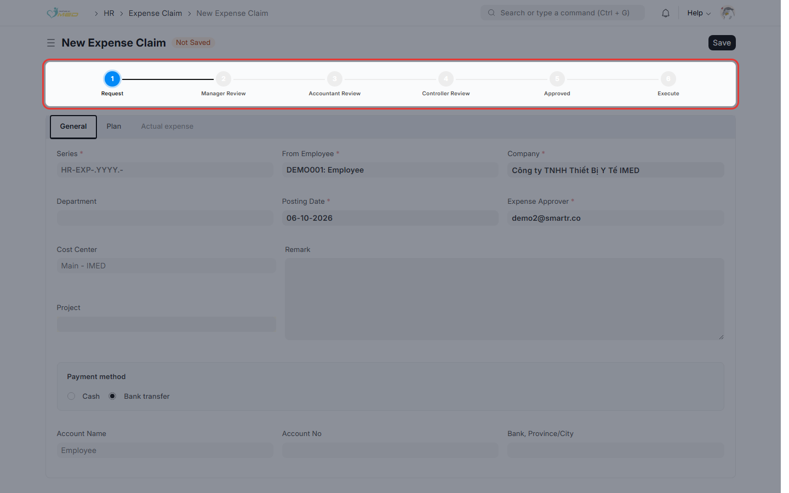
Bước 4: Kiểm tra General
Ở General, kiểm tra:
- From Employee, Company, Posting Date
- Expense Approver — người duyệt, không đổi trên form
- Payment method: Cash hoặc Bank transfer
- Account Name, Account No, Bank, Province/City — lấy từ hồ sơ nhân viên khi chuyển khoản
Có thể nhập Remark nếu cần ghi chú chung.
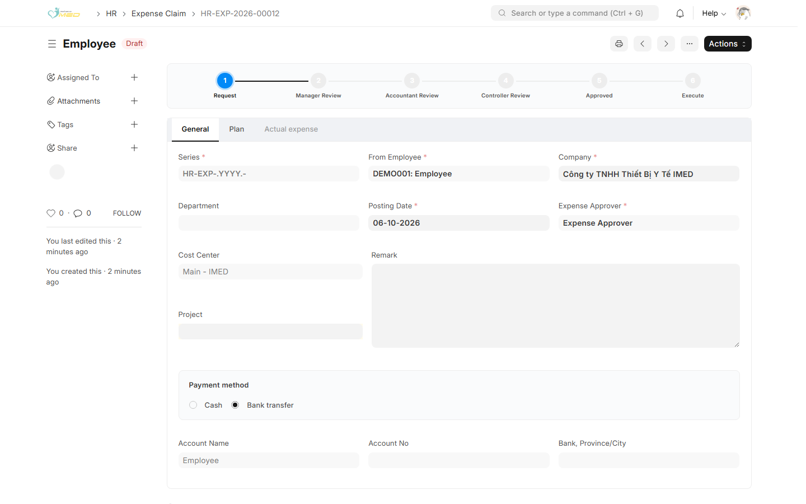
Bước 5: Nhập Plan
Mở Plan và nhập:
- Start Date và End Date (bắt buộc). Một ngày thì chọn Same as start date
- Plan Details — mô tả mục đích
- Planned Budget (VND)
- Travel Request: để No nếu không cần giấy đi đường. Chọn Yes khi cần mẫu 04-LĐTL
- Request advance: với luồng này chọn No advance
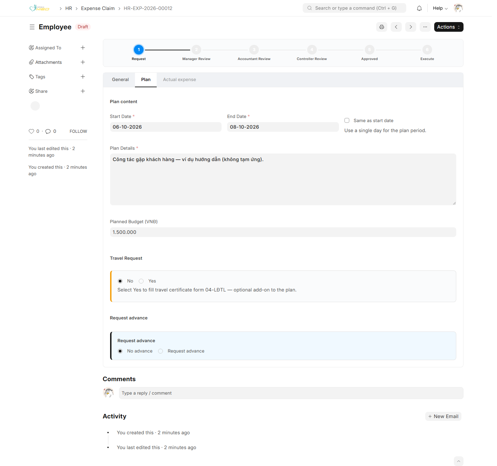
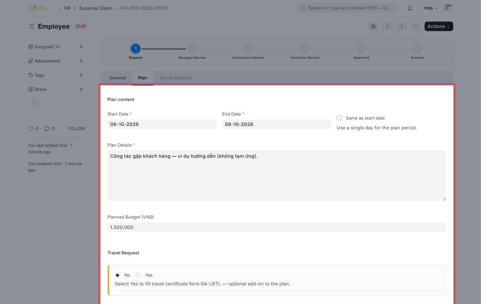
Bước 6: Gửi kế hoạch
Nhấn Save nếu phiếu còn Not Saved. Mở Actions và chọn Submit Plan. Chỉ bước này đưa phiếu tới quản lý. Save một mình thì quản lý vẫn chưa thấy.
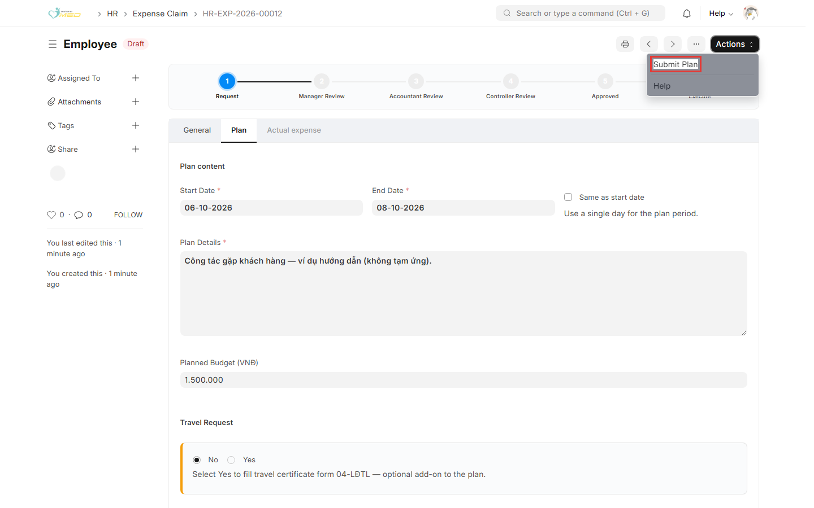
Sau khi gửi, bạn không sửa kế hoạch cho đến khi phiếu được trả về. Quản lý trên phiếu nhận thông báo Duyệt kế hoạch. Đọc lý do trên Activity nếu bị từ chối.
Bước 7: Actual expense còn khóa
Trước khi quản lý duyệt kế hoạch, mục Actual expense bị khóa. Bạn chưa thêm dòng chi phí ở bước này.
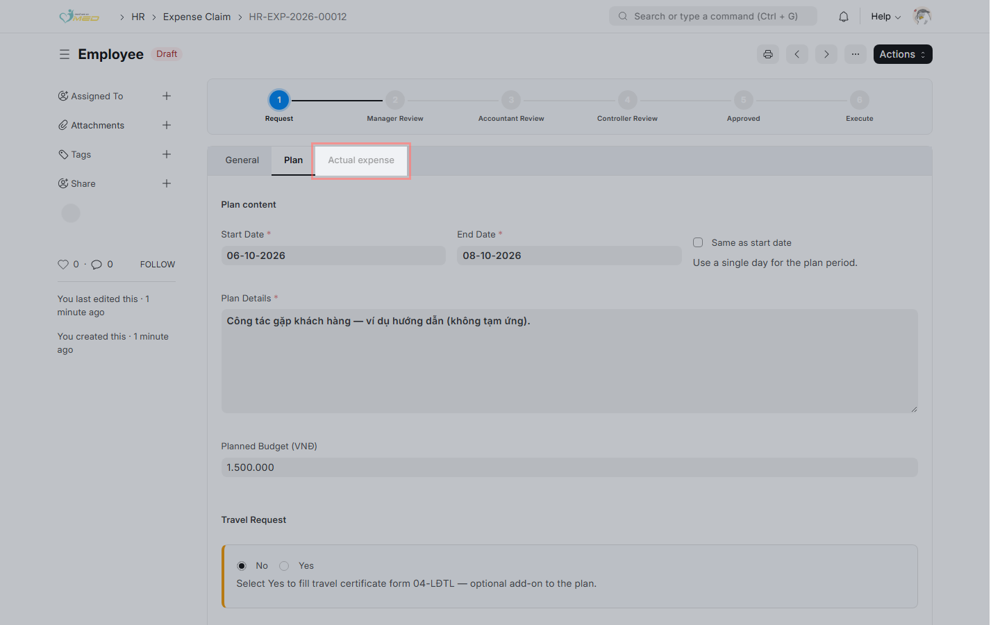
Bước 8: Nhập chi phí thực tế và gửi
Khi quản lý đã duyệt kế hoạch và không có tạm ứng, bạn nhận thông báo Tiếp tục claim. Bước Execute trên thanh quy trình sáng và tab Actual expense mở được. Mở lại đúng phiếu đó.
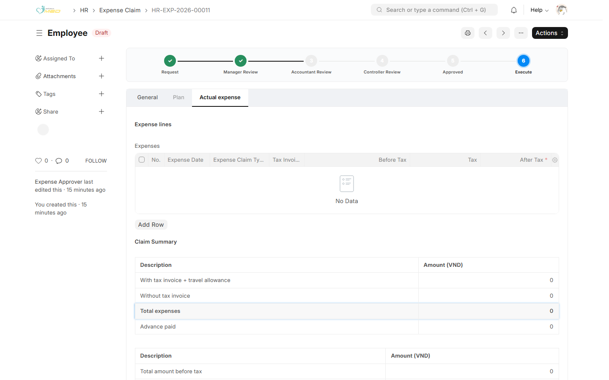
Trên bảng Expenses:
- Nhấn Add Row
- Nhập Expense Date, Expense Claim Type, Before Tax, Tax, After Tax
- Đánh dấu Tax Invoice nếu có hóa đơn thuế
- Đính kèm ảnh hoặc file chứng từ
- Kiểm tra Claim Summary
- Mở Actions → Submit Actual
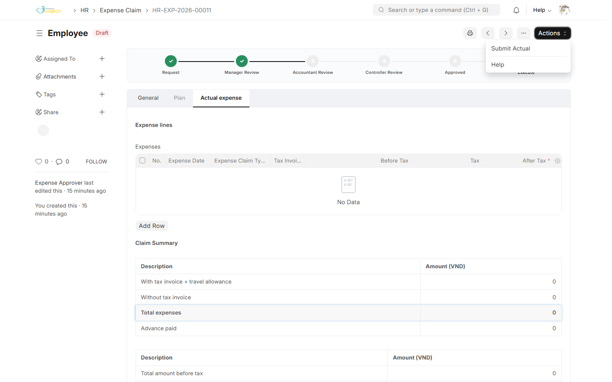
Bước 9: Theo dõi Activity
Cuộn xuống mục Activity trên form. Mỗi lần gửi, duyệt hoặc từ chối được ghi tại đây. Khi bị từ chối, đọc dòng ghi chú trước khi sửa.
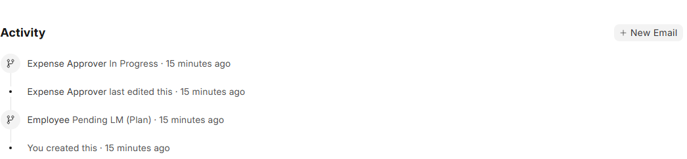
Các bước — Quản lý (Expense Approver)
Đăng nhập bằng tài khoản Expense Approver. Bước này nằm sau khi nhân viên chọn Submit Actual và trước khi Kế toán mở tab Accounting. Trên thanh quy trình, bước Manager Review đang sáng.
Bước 1: Mở danh sách
Vào HR → Expense Claim. Bạn thấy đề nghị của chính mình, và các phiếu ghi bạn ở Expense Approver khi nhân viên đã gửi và phiếu đang chờ bạn duyệt kế hoạch hoặc chi phí thực tế. Phiếu nhân viên chỉ Save, chưa Submit Plan hoặc Submit Actual, không có trong danh sách. Cột Status có thể vẫn là Draft.
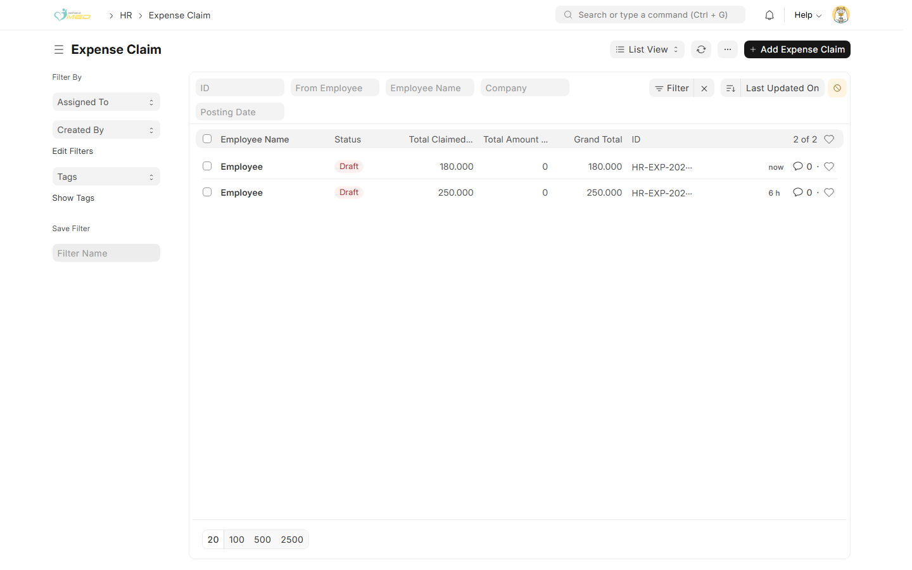
Bước 2: Tab Approvals
Phiếu mở sẵn tab Approvals. Thẻ Line Manager trên Approval trail đang Pending.
Xem Budget summary chart để so sánh ngân sách kế hoạch với số kê khai. Có thể ghi LM Approver Note.
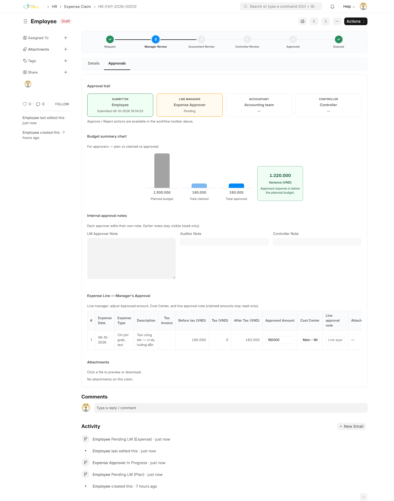
Bước 3: Duyệt từng dòng
Trong Expense Line — Manager's Approval, số đã kê là chỉ đọc. Bạn sửa được:
- Approved Amount — không cao hơn số nhân viên đã kê
- Cost Center
- Line approval note
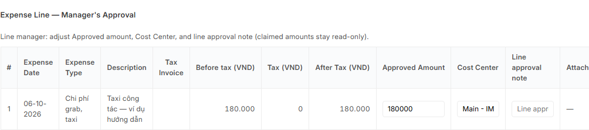
Bước 4: Gửi Kế toán hoặc từ chối
Mở Actions:
- Approve Expense — chuyển phiếu sang Kế toán. Kế toán nhận thông báo Kế toán duyệt
- Reject — trả phiếu cho nhân viên. Nhân viên nhận thông báo Claim bị từ chối và đọc lý do trên Activity
Sau Approve Plan hoặc Approve Expense, màn hình về danh sách kèm thông báo xanh Expense Claim updated successfully. Phiếu rời hàng chờ của bạn.
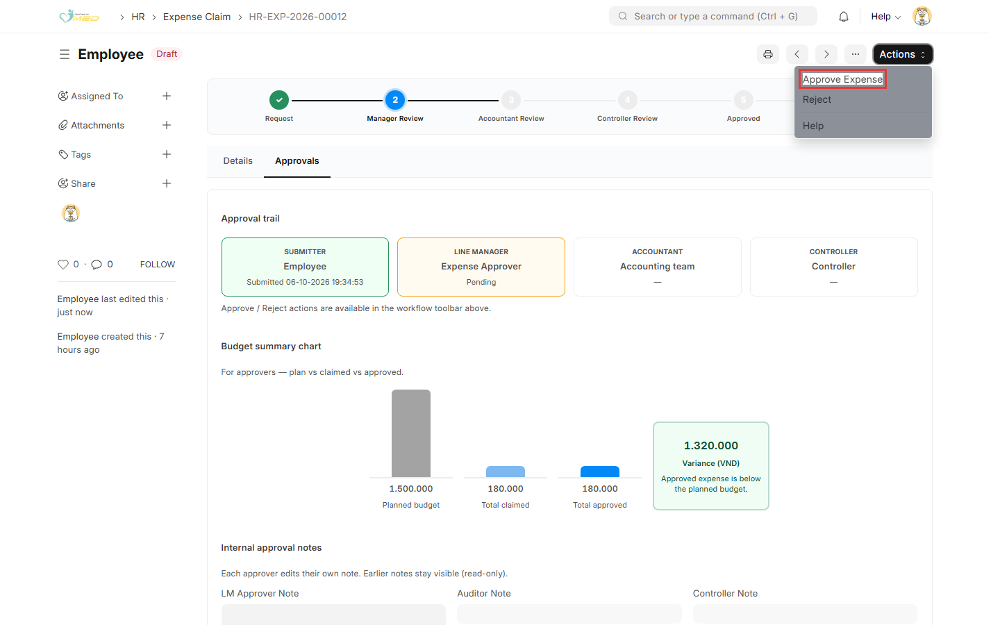
Các bước — Kế toán (Auditor)
Đăng nhập bằng tài khoản vai trò Auditor. Bạn xử lý phiếu sau khi quản lý đã duyệt chi phí thực tế. Trên thanh quy trình, bước Accountant Review đang sáng.
Bước 1: Mở danh sách
Vào HR → Expense Claim. Danh sách gồm phiếu đang chờ tạm ứng, đang chờ bạn duyệt chi phí, đang ở bước thực hiện, và phiếu đã chuyển Controller. Cột Status có thể vẫn là Draft.
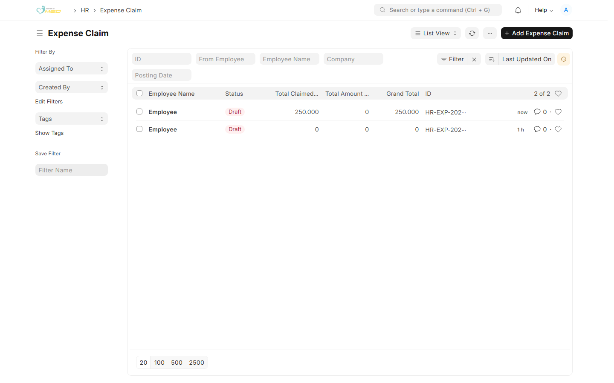
Bước 2: Tab Accounting
Phiếu mở sẵn tab Accounting. Các tab khác: Details, Approvals.
Kiểm tra Accounting summary, Claim Summary và số Additional payment (số cần chi thêm) hoặc phần tạm ứng nếu có.
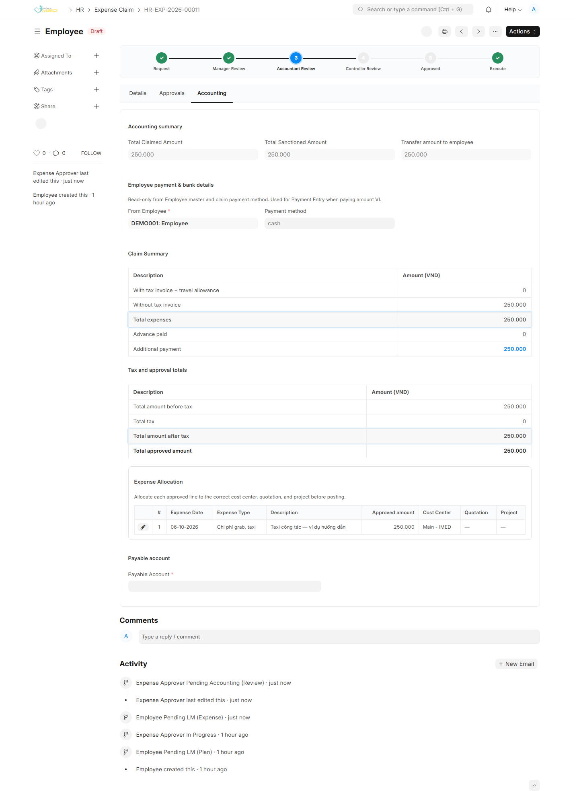
Bước 3: Expense Allocation
Trong Expense Allocation, mỗi dòng đã duyệt cần Cost Center. Có thể gắn thêm Quotation và Project. Nhấn biểu tượng bút chì trên dòng để sửa.
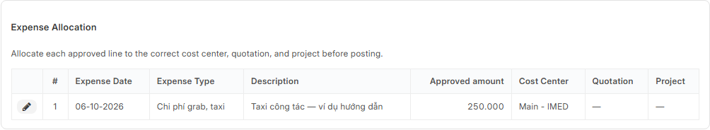
Chọn Payable Account trước khi chuyển Controller. Trường này là bắt buộc.
Bước 4: Chuyển Controller hoặc từ chối
Mở Actions:
- Approve for Controller — gửi phiếu sang Controller. Controller nhận thông báo FM duyệt
- Reject — trả phiếu, bắt buộc nhập lý do. Nhân viên nhận thông báo Claim bị từ chối. Lý do hiện trên Activity
Sau Approve for Controller, màn hình về danh sách kèm thông báo xanh Expense Claim updated successfully.
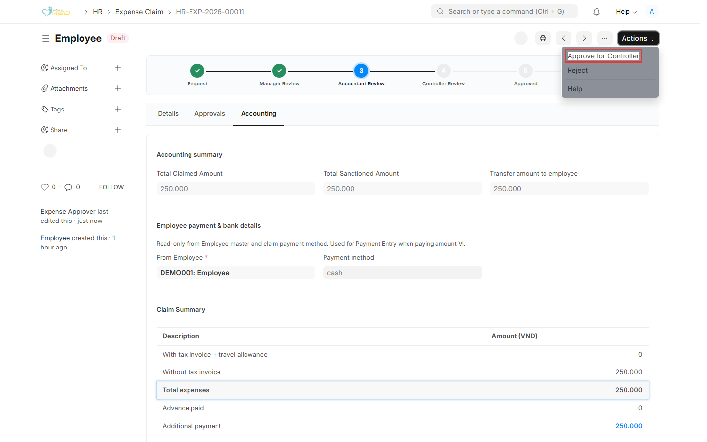
Các bước — Controller
Đăng nhập bằng tài khoản vai trò Controller. Bạn duyệt cuối sau khi Kế toán đã chọn Approve for Controller. Bước Controller Review đang sáng.
Bước 1: Mở danh sách
Vào HR → Expense Claim. Danh sách gồm phiếu đang chờ bạn duyệt cuối và phiếu đã duyệt xong. Mở phiếu đang chờ.
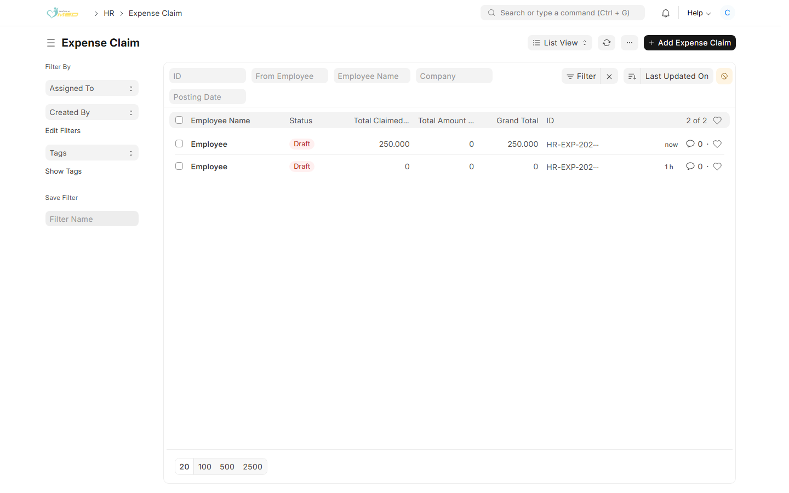
Bước 2: Tab Controller
Phiếu mở sẵn tab Controller. Đây là bản tóm tắt để ký duyệt, không sửa từng dòng chi phí. Chi tiết dòng nằm ở tab Approvals hoặc Accounting.
Xem:
- Claim summary for sign-off — nhân viên, ngân sách kế hoạch, số đã duyệt, số chuyển cho nhân viên
- Approval trail — người gửi, quản lý và kế toán đã xong; Controller đang Pending
- Budget summary chart — so sánh kế hoạch, số kê khai và số duyệt. Ô chênh lệch hiện khi số duyệt cao hơn ngân sách kế hoạch
- Payable Account — tài khoản Kế toán đã chọn
- Controller Note — ghi chú tùy chọn
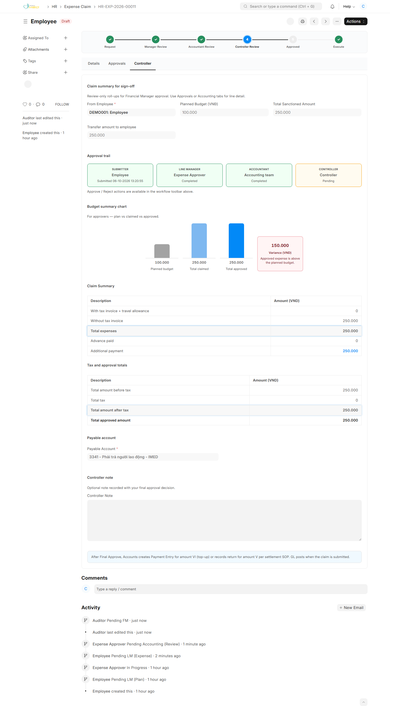
Bước 3: Duyệt cuối hoặc từ chối
Mở Actions:
- Final Approve — duyệt xong. Thanh quy trình tới Approved. Nhân viên nhận thông báo Claim đã duyệt
- Reject — trả phiếu và ghi lý do. Nhân viên nhận thông báo Claim bị từ chối
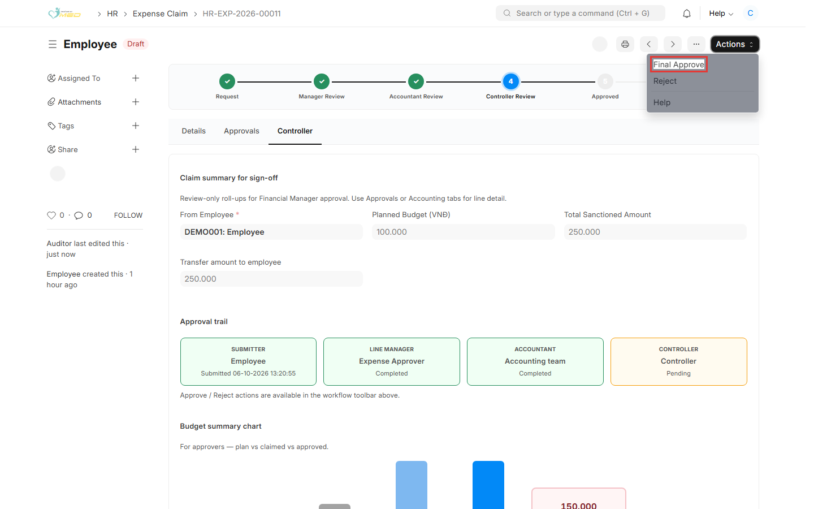
Thanh quy trình
Nhãn dưới đây là tiếng Anh như trên môi trường chụp ảnh. Bước đang làm có số màu xanh. Bước đã xong có dấu tích.
| Bước | Nhãn trên màn hình | Khi nào bạn thấy |
|---|---|---|
| 1 | Request | Phiếu mới hoặc đang sửa bản nháp |
| 2 | Manager Review | Đang chờ quản lý duyệt kế hoạch, hoặc duyệt chi phí thực tế |
| 3 | Accountant Review | Đang chờ Kế toán |
| 4 | Controller Review | Đang chờ Controller |
| 5 | Approved | Đã duyệt xong |
| 6 | Execute | Kế hoạch đã duyệt — bạn nhập chi phí thực tế. Bước này có thể sáng trước bước 3–5 |
Sau khi bạn gửi — ai làm gì?
| Vai trò | Việc chính |
|---|---|
| Quản lý (Expense Approver) | Duyệt kế hoạch. Sau khi bạn gửi chi phí thực tế, duyệt lại từng dòng |
| Kế toán (Auditor) | Rà chứng từ và phân bổ. Nếu có tạm ứng, xử lý chi hoặc thu hồi |
| Controller | Duyệt cuối. Thanh quy trình tới Approved |
Thông báo
Thông báo xuất hiện trên chuông của ERP và được gửi kèm email tới đúng người ở bước đó. Mở thông báo để vào phiếu.
| Khi nào | Ai nhận | Tiêu đề |
|---|---|---|
| Nhân viên gửi kế hoạch | Quản lý ghi trên phiếu | Duyệt kế hoạch |
| Quản lý duyệt kế hoạch có tạm ứng | Kế toán | Tạm ứng |
| Sẵn sàng nhập chi phí thực tế | Nhân viên tạo phiếu | Tiếp tục claim |
| Nhân viên gửi chi phí thực tế | Quản lý ghi trên phiếu | Duyệt chi phí |
| Quản lý duyệt chi phí thực tế | Kế toán | Kế toán duyệt |
| Kế toán chuyển Controller | Controller | FM duyệt |
| Phiếu bị từ chối | Nhân viên tạo phiếu | Claim bị từ chối |
| Controller duyệt cuối | Nhân viên tạo phiếu | Claim đã duyệt |
Kết quả mong đợi
- Sau Save, chưa gửi: chỉ bạn thấy phiếu và có thể mở lại sau. Quản lý chưa thấy
- Sau Submit Plan: phiếu chờ quản lý. Bạn không sửa kế hoạch
- Sau khi kế hoạch được duyệt và không tạm ứng: bước Execute sáng, tab Actual expense mở
- Sau Submit Actual: phiếu đi tiếp Quản lý → Kế toán → Controller
- Khi xong, bước Approved hoàn tất trên thanh quy trình và bạn nhận thông báo Claim đã duyệt
- Mọi lần chuyển bước quan trọng nằm trong Activity và trên chuông thông báo
Xử lý sự cố thường gặp
| Triệu chứng | Nguyên nhân có thể | Cách xử lý |
|---|---|---|
| Không thấy Add Expense Claim | Tài khoản chưa có quyền Employee | Nhờ quản trị kiểm tra vai trò và hồ sơ nhân viên |
| Không thấy Submit Plan | Phiếu chưa lưu. Form mới chỉ có Save | Nhấn Save, rồi mở Actions |
| Không mở được Actual expense | Kế hoạch chưa được duyệt | Đợi quản lý duyệt. Theo dõi Activity |
| Không đổi được người duyệt | Expense Approver khóa theo hồ sơ | Nhờ HR sửa trên hồ sơ Employee |
| Bị từ chối | Thiếu thông tin hoặc chứng từ | Đọc Activity. Chọn Resubmit Plan hoặc Resubmit Actual, sửa, rồi gửi lại |
| Quản lý không thấy phiếu nhân viên vừa lưu | Nhân viên chưa gửi | Nhân viên mở lại phiếu từ danh sách của họ, rồi chọn Submit Plan hoặc Submit Actual. Chỉ Save thì quản lý chưa thấy |
| Quản lý không thấy Approve Expense | Nhân viên chưa gửi chi phí thực tế, hoặc phiếu đã sang Kế toán | Đợi Submit Actual. Bước Manager Review phải đang sáng |
| Kế toán không thấy Approve for Controller | Phiếu chưa tới bước Kế toán, hoặc thiếu Cost Center / Payable Account | Đợi quản lý duyệt chi phí thực tế. Điền phân bổ và tài khoản phải trả, rồi mở Actions |
| Controller không thấy Final Approve | Kế toán chưa chuyển phiếu | Đợi bước Controller Review sáng trên thanh quy trình |
| Cột Status vẫn là Draft | Nhãn danh sách không phải thanh quy trình | Mở phiếu và xem thanh quy trình cùng Activity |
| Không thấy phiếu của người khác | Danh sách lọc theo vai trò | Nhân viên chỉ thấy phiếu của mình. Quản lý chỉ thấy phiếu đang chờ mình duyệt |
| Vừa duyệt xong thì về danh sách, phiếu biến mất | Phiếu đã sang người kế tiếp | Đọc thông báo xanh. Người nhận bước sau có thông báo trên chuông |
| Không thấy thông báo chuyển bước | Chuông hoặc email chưa được mở | Mở biểu tượng chuông trên thanh trên và kiểm tra hộp thư của tài khoản ERP |